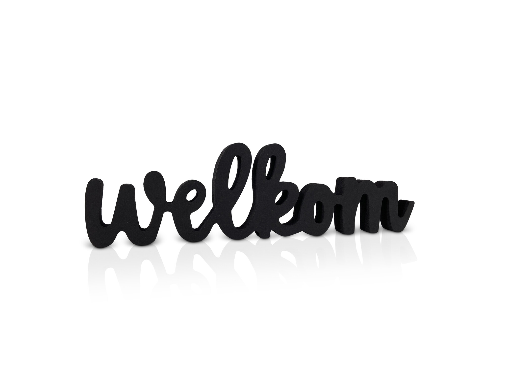

Welkom op mijn allereerste website! Ontdek meer over mij en kom meer te weten over mij!
🌟 Wie ben ik? Ik ben Nassim, 16 jaar oud geboren op 1 oktober 2009, en ik zit in havo 4 op het Vlietland College 📚. Ik woon in Voorschoten 🏡. Naast school werk ik bij De Beren 🍴, iets wat ik met veel plezier doe en waar ik veel leer. In mijn vrije tijd ben ik vaak aan het voetballen ⚽, omdat ik sporten leuk vind en het me fit houdt. Ook ga ik regelmatig naar de sportschool 💪 om sterker en fitter te worden. Soms speel ik op de PlayStation 🎮 of ben ik op mijn telefoon 📱. Mijn favoriete eten is kip of vlees 🍗🥩, en mijn droomvakantieland is een tropisch land 🌴☀️ zoals Griekenland 🇬🇷.
Op deze website kun je meer leren over mijn interesses, nieuwtjes lezen en contact met mij opnemen.